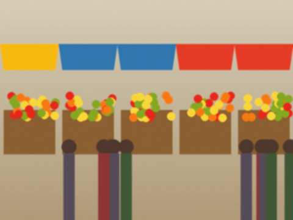

28 June 2013 Bakai got his diploma on Friday. Economics, TSU, a red cover. He did not need to wear the tie; I told him he must, I had a lot of ties.
In September he starts work at a bank in the city, the bank with the blue sign. The first salary he gives to me and I give back. A mother has to do this.
In front of the main building, 14.00. His tie is a little to the left. 13 November 2012 I have to write this. I am 42. My doctor, Dr Zhamal at the polyclinic, looked at my legs and said the bus is not a good friend. Sitting 26 hours, standing 10, carrying 50 kilos. She said do not do it more than three times a year. I said I will think about it. She said nobody thinks about it until the legs do it for them.
I now have special socks that cost more than the jacket I sell. My mother wears them too. We look like a ballet. 21 May 2012 Ruslan wrote he is leaving the phone shop for a repair centre. Four years. He started when he was this tall and now he is a man who buys me tea.
I told him: go, but the new place will need screens and spare parts, and I know the shelf. He said "Kunduz-apa, I will write you from the new place." I told him not to write, to call. 8 March 2012 My stall on International Women's Day is full of men who have forgotten what to buy. A scarf, 15 som, they say "it is for my wife", and the wife is standing behind them. I give them a card and a bear for free. It is the same bear as the keyring.
If you are a man reading this: buy the scarf before the 7th.
 The scarf table at the stall, 7 March, 8 a.m. By noon it was empty.18 December 2011 The covers I sold for three years were for phones with buttons. Now Ruslan's customers have the big touch screens and nothing fits. Every phone is a different size, with the same name. I wanted to cry.
In December I went and bought 40 kinds of cover, 12 of each. I know at the stall which will sell: the clear ones with glitter, the black ones for boys, and the horse (the horse always). |